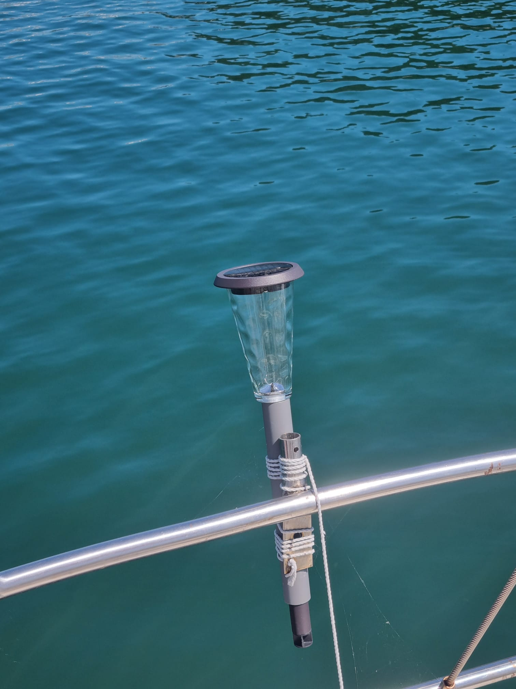

Un tuto Passe-Coque
Un tuto Passe-Coque
Un feu de mouillage solaire ? C'est possible, et pas si cher que ça !

L'avantage est que ce feu est autonome, pas besoin de le recharger, il se recharge tout seul en
énergie solaire.
On en trouve dans toutes les jardineries, magasins de bricolage, etc...
Comme c'est fait pour être à l'extérieur, c'est suffisament étanche pour aller sur un bateau !
Sur la photo, le feu est dans un tube en PVC fixe sur le balcon arrière, de façon à ce qu'on puisse le rentrer, il n'est pas fixé en permanence dehors.
© 2025, Passe-Coque